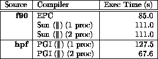

HPF codes with `regular computations', eg EP, fare well; those with `irregular' array accesses, eg FFT1, do not.
EP (NAS benchmark) on SPARCcenter 1000 (2 sun4d processors):

Fortran 90 on SPARCcenter 2000 takes 115s; HPF on 8 processors takes 12s.
FFT1 (ParkBench) on 1 IPX with epcf90 takes 0.3s; on 8 IPXs with pghpf takes 33s!
For more information, click here